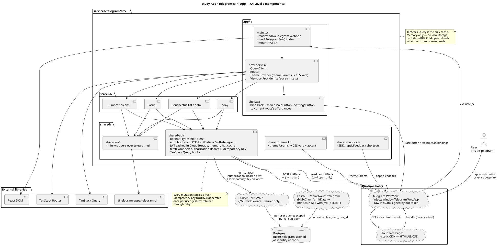

Architecture
A static bundle of HTML / JS / CSS served by a CDN, opened inside Telegram's WebView. On cold open the client sends Telegram's signed initData to POST /api/v1/auth/telegram, gets back a 24 h JWT, and uses that as a bearer token on every subsequent /api/v1 call. No server-rendered pages, no BFF, no new persistence — each screen is a client-side view over an existing endpoint.
Runtime model
Three things happen in three places. None of them require Node at runtime — Node lives only on the dev machine and in CI.
| Layer | What lives here | Where it runs |
|---|---|---|
| Trigger | aiogram bot (/start, launch button, deep-link scheme) colocated in services/api/app/bot/. |
Same process as the FastAPI API (long-poll in dev, webhook in prod). |
| Client bundle | React app: router, providers, screens, generated API client, i18n, motion. | Cloudflare Pages CDN → downloaded once, cached, executed inside Telegram's WebView. |
| Backend contract | /api/v1 — conspectuses, schedule, errors, reviews. All routes gated by a JWT middleware; /auth/telegram, /live and /ready stay open. |
Same FastAPI process that ran before the Mini App existed, plus the new /auth/telegram handler and the JWT middleware. |
Request path
The wire-level order — user tap → HTTP → Postgres → screen paint — is the same as any other /api/v1 consumer and lives in one place, not two: Business flow & UML sequence on the api service page. Three client-specific notes that do not fit that generic view:
- Auth bootstrap. On the first request of a session, the client POSTs
window.Telegram.WebApp.initDatato/api/v1/auth/telegram. The server HMAC-verifies it againstTELEGRAM_BOT_TOKEN, then upserts two rows: a per-provider identity intelegram_userskeyed ontelegram_user_id, and its paired core row inusersunder the composite key(system_uuid=<telegram system>, system_user_id=str(telegram_user_id)). Response: a 24 h JWT signed withJWT_SECRETwhosesubclaim isusers.client_uuid. The token is cached inWebApp.CloudStorageso a warm open reuses it without a network round-trip. - Header contract. Every subsequent request carries
Authorization: Bearer <jwt>. Every mutation (POST / PATCH / DELETE) additionally carriesIdempotency-Key: ${uuidv4()}, generated once per user gesture and retained through retry, so a lost 4G reply never doubles an action. - State cache. TanStack Query holds the on-screen server state; mutations optimistically update it and roll back on error. The cache is memory-only — no
localStorage, noIndexedDB. Cold open reloads everything the current screen needs, no more.
Build pipeline
One command from source to a CDN-shippable artefact. Deterministic, reproducible from package-lock.json, no post-install network calls.
make -C services/telegram install # npm ci → node_modules/ from the lockfile
make -C services/telegram typecheck # tsc --noEmit (strict, project references)
make -C services/telegram lint # eslint . (flat config)
make -C services/telegram build # tsc -b && vite build → services/telegram/dist/The dist/ output is three-to-five files: index.html, one JS chunk (~46 KB gz today), one CSS bundle, source-maps. No fonts fetched over the network — system stack only, per the performance budget in the epic.
make -C services/telegram verify chains typecheck → lint → build. Wired into the root make verify composite in W7 alongside the Lighthouse-CI gate.
Code layout
Flat single-package. No web/ subdirectory, no npm workspace root — one package.json, one node_modules. A single-package workspace earns nothing but ceremony; siblings (ops/, e2e/, storybook/) can land later without restructuring.
services/telegram/
├── package.json · tsconfig.{json,app.json,node.json} · vite.config.ts · eslint.config.js
├── index.html entry HTML (Vite consumes it)
├── Makefile dev / install / typecheck / lint / build / verify
└── src/
├── main.tsx SDK bootstrap → mount <App>
├── App.tsx root — router shell
├── app/ router · providers · shell (BackButton, MainButton)
├── screens/ one directory per screen (Today, Focus, Conspectus, …)
├── shared/api/ openapi-typescript client + JWT bootstrap + Authorization Bearer + Idempotency-Key
├── shared/ui/ thin wrappers over @telegram-apps/telegram-ui
├── shared/haptics.ts SDK.hapticFeedback shortcuts
├── shared/theme.ts themeParams → CSS vars + accent
└── styles/ global + accent overlay on tg-themeC4-Component view — inside the bundle
Zoom-in on what runs when Telegram opens the WebApp. Each component is a directory in src/; each arrow is a synchronous function or React-hook call.
| Component | Responsibility | Talks to |
|---|---|---|
main.tsx |
Read window.Telegram.WebApp, install mockTelegramEnv() shim in dev, mount <App>. |
Telegram SDK · React DOM |
app/providers.tsx |
Wire QueryClient, Router, ThemeProvider (themeParams → CSS vars), ViewportProvider (safe-area insets). |
TanStack Query · TanStack Router · SDK |
app/shell.tsx |
Bind Telegram back-button, main-button, settings-button to the current route's affordances. | SDK · Router |
screens/* |
Per-screen views. Each screen owns its data hooks (via shared/api/) and its own local UI state (via zustand if it grows past 3 items). |
shared/api/ · shared/ui/ |
shared/api/ |
Generated OpenAPI client + auth bootstrap (POST initData to /auth/telegram, cache the JWT in CloudStorage, refresh before expiry) + fetch wrapper that injects Authorization: Bearer <jwt> and a fresh Idempotency-Key per mutation. TanStack Query hooks live here. |
/api/v1 |
shared/ui/ |
Study-App-branded wrappers around @telegram-apps/telegram-ui primitives. Zero business logic. |
telegram-ui |

shared/api. On cold open shared/api exchanges Telegram initData for a JWT at /auth/telegram, caches it in CloudStorage, and injects Authorization: Bearer + Idempotency-Key on every call. Source: services/portal/internal/reference/uml/services/telegram_component_view.puml.Regenerate with make docs-fix. Kroki renders the SVG once the .puml source changes (fingerprint cache in reference/uml/input-hashes.json).